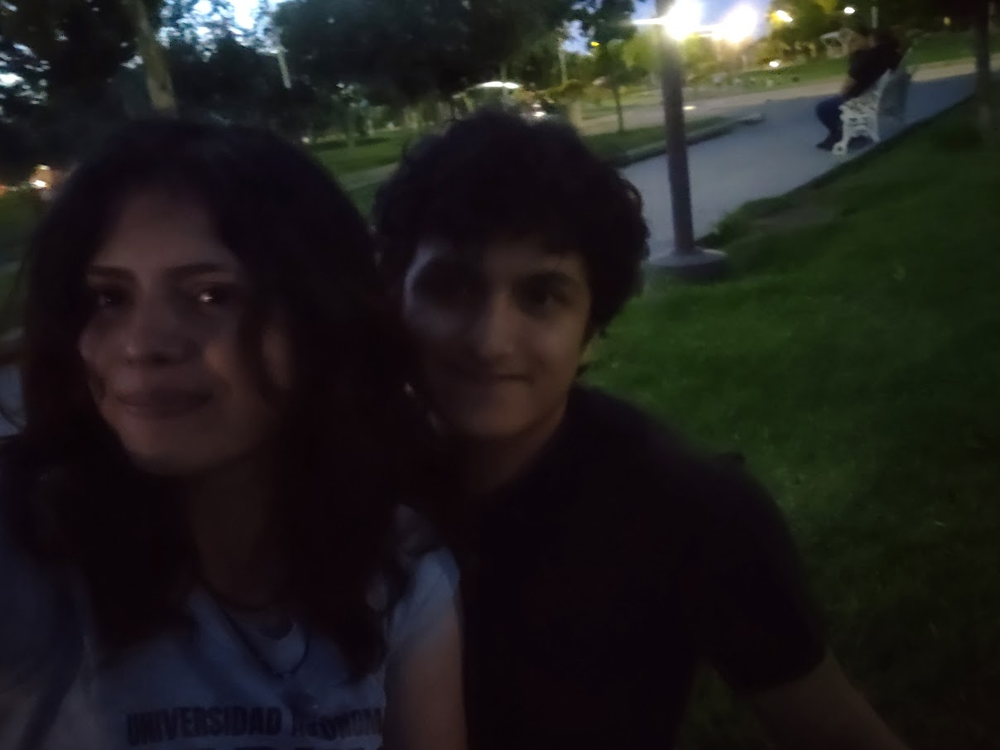
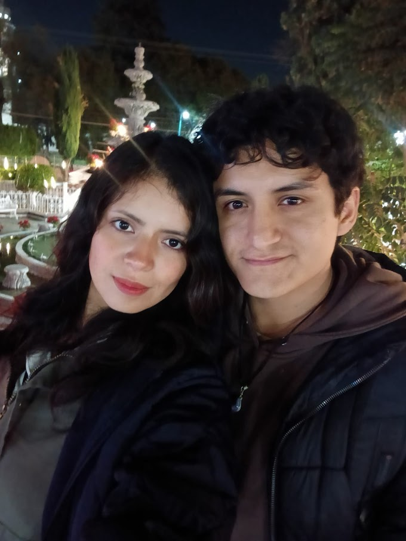

Hola mi amor, recuerda que eres el amor de mi vida y que eres lo mas importante que tengo, haría cualquier cosa por tí, te amo, jamás lo olvides <3


(Toca la pantalla si no se escucha la música) 🎵